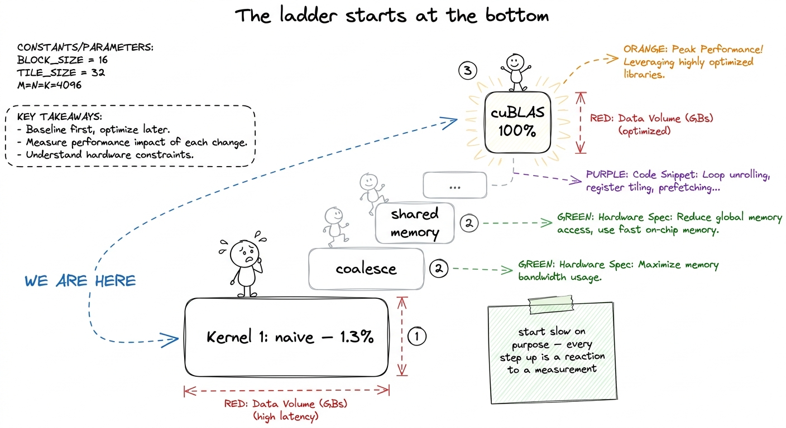
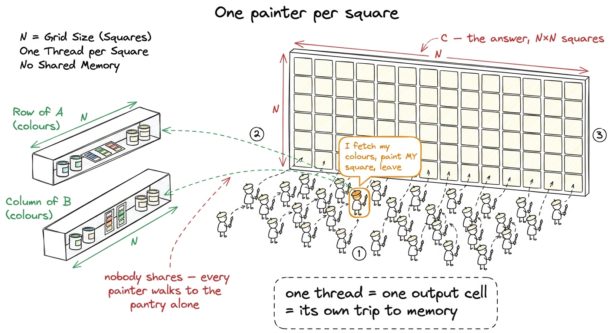
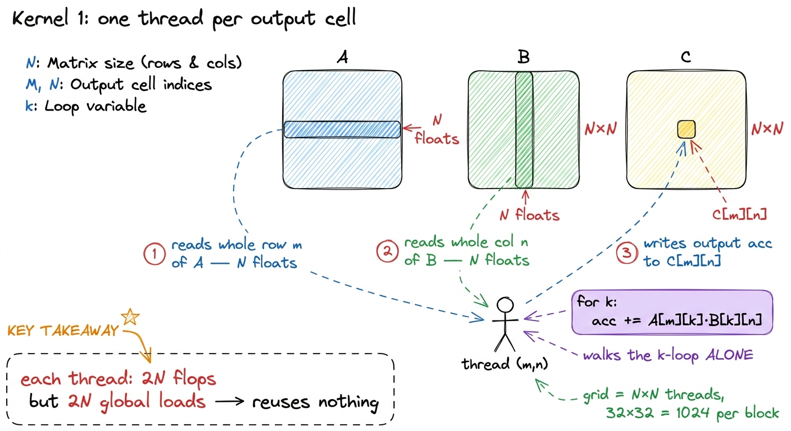
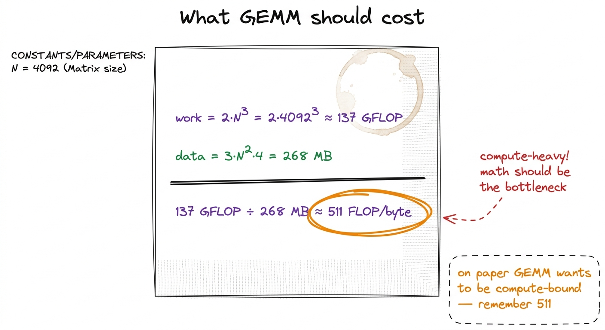
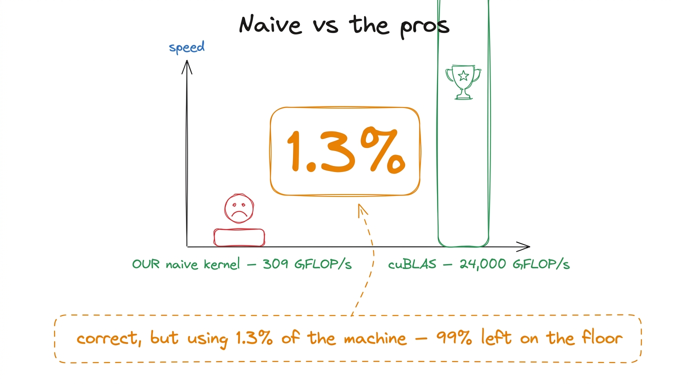
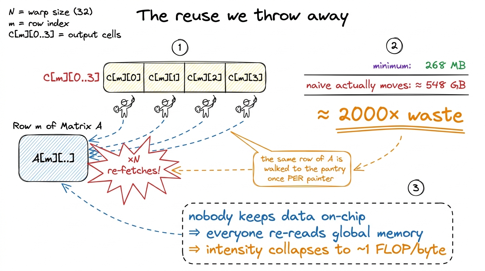

Teaching Kernel 1: the honest, slow start
By the end of this chapter you'll be able to stand up, write the dumbest possible matrix-multiply kernel on the board, run it live, show that it hits 1.3% of the professional library — and make the room hungry to fix it. This chapter is not about being fast. It's about the honest, slow start that gives every optimization afterward a reason to exist.
The teaching secret: the naive kernel is a gift. It is correct, simple, and catastrophically slow. That gap — between "it works" and "it's good" — is the emotional engine of the whole workshop. Your only job in this first kernel is to open the gap wide and leave students staring into it.
Why start with something bad on purpose
Students expect the good kernel. Resist that. Show the fast version first and they'll memorize it and understand nothing. Instead you write the version they would write on day one — the obvious one — then measure it and let the measurement hurt.
The whole course is a ladder. This is rung one. Every rung after it is a reaction to a measurement — never a trick pulled from the air. So the discipline you teach from minute one is: write the smallest thing, measure it, let the hardware tell you what's wrong. Say it out loud. It's the spine of everything.

figure rendering · The mindset for the whole course: we start at the bottom on purpose, aThe one idea: one worker per answer cell
Recall what a matrix multiply is (you taught this already): the answer matrix C is a grid, and every cell of that grid is one dot product — a row of A slid against a column of B, multiplied pair by pair and summed.
Now, how do you split that job across a GPU's thousands of tiny workers? The most natural idea — the one everybody writes first — is beautifully simple: give each worker exactly one cell of the answer to fill in.

figure rendering · The naive kernel as a paint-by-numbers wall: one painter per square, aWhy is this the obvious move? Because a GPU is thousands of tiny cores that all want to do the same thing to different data. Our answer has N² cells, each computed the same way, so we launch an N × N grid of workers — one per cell — and each walks its own dot-product loop. It maps one-to-one onto the three nested loops students already know.
The kernel, built up gently
Let's write it. In GPU code, each worker is called a thread, and it figures out which cell it owns from its position in the grid:
__global__ void sgemm_naive(int N, const float* A, const float* B, float* C) {
const uint m = blockIdx.y * blockDim.y + threadIdx.y; // my row of C
const uint n = blockIdx.x * blockDim.x + threadIdx.x; // my column of C
if (m < N && n < N) {
float acc = 0.0f;
for (int k = 0; k < N; ++k) // walk the dot product
acc += A[m * N + k] * B[k * N + n];
C[m * N + n] = acc; // write my one cell
}
}Walk the room through it slowly. The first two lines are the thread asking "which cell am I?" The if guard is politeness — threads launch in tidy 32×32 blocks, N might not divide evenly, so a few edge threads are told to sit quietly and not scribble out of bounds. The heart is the for k loop: fetch A[m][k], fetch B[k][n], multiply, accumulate. That's the dot product — the "receipt" — done by one lonely thread.
A[m * N + k] and not A[m][k]? Because the matrix is stored as one long flat line of numbers, row after row. To reach row m, jump over m whole rows (m * N), then step k across. Draw the flat array as a ribbon and physically point. Second: "who runs this code?" Every thread runs the entire function — the code is written once but a million copies run at once, each with a different m and n. That "one program, a million runners" idea is the whole GPU model; say it plainly.And the launch that fires off the million threads:
dim3 block(32, 32); // 1024 threads per block
dim3 grid(CEIL_DIV(N, 32), CEIL_DIV(N, 32));
sgemm_naive<<<grid, block>>>(N, A, B, C);That's the whole thing. It compiles, it runs, it gives the exactly correct answer. And it's terrible. Now comes the fun part.

figure rendering · The technical translation of the painter picture: each thread streamsDo the count by hand first (the napkin)
Before you run anything, count the work on the board — because the count is what makes the slowness shocking instead of abstract. Good kernel engineering starts on a napkin, not in a profiler.
N = 4092 (the size in the reference benchmark). The work is 2 · N³ floating-point operations — a multiply and an add for each of the N steps in each of the N² cells. That's 2 · 4092³ ≈ 137 billion operations. The necessary data is just three matrices, read/written once: 3 · N² · 4 bytes ≈ 268 MB. Divide work by data: 137 GFLOP / 268 MB ≈ 511 operations per byte. Half a thousand sums for every byte we're forced to move. That's a very compute-heavy job — done right, the math units should be the bottleneck, not the memory.Hold that number — 511 operations per byte — on the board. It's the promise of what GEMM could be. Our naive kernel is about to betray it completely, and the betrayal is the lesson.

figure rendering · The napkin count students should see before any code runs: GEMM oughtThe live demo: run it, read the number
This is the centerpiece of the block. You run the kernel in front of them and read the number aloud.
cuBLAS (NVIDIA's professional library) doing the identical math: about 24 TFLOP/s. Now do the division on the board, live: 309 / 24000 ≈ 0.013. We are at 1.3% of the library. Write "1.3%" huge and circle it. That single fraction is the hook for the entire four weeks.
figure rendering · The scoreboard that makes the room gasp: our correct kernel reaches 1.Why is it so slow? Let the hardware tell you
Model the difference between a beginner and an engineer. The beginner shrugs and randomly changes block sizes. The engineer opens the profiler and asks the hardware what's wrong. Teach the second reflex.
Point the profiler (Nsight Compute, ncu) at the kernel and the memory section lights up red. It isn't compute-bound at all — it's drowning in memory traffic. The reason is one word: reuse, or rather the total lack of it.
Back to the painters. Painter (m, n) walks to the pantry, grabs the entire row m of A and column n of B, uses them once, throws them away. Now the painter next door — cell (m, n+1) — needs the exact same row m of A... so she walks to the pantry and fetches it all over again. Every element of A gets re-fetched by all N painters in its row. Nobody kept anything on their tray for a neighbor.
N² threads loads 2N + 1 floats. So the real traffic is N² · (2N+1) · 4 bytes ≈ 548 GB. The minimum was 268 MB. The naive kernel moves about two thousand times more data than necessary — because every thread re-reads the same handful of matrices from scratch. That 2000× is where the 1.3% comes from.
figure rendering · Zoom in on one row: the same data is fetched from far-away memory onceRemember our napkin promised 511 operations per byte. The naive kernel, by refusing to reuse, drags that down to about 1 operation per byte — it falls off the compute roof and lands in the memory-bound basement. The GPU's beautiful math units sit idle while the memory system thrashes.
What the profile tells us to do next (the cliffhanger)
Don't fix it in this chapter. The whole pedagogy is that the profile hands us the next move. So end by pointing at the two things the profiler flagged, in priority order, and leave them as a promise:
- First, coalescing. The reads a warp of 32 threads makes are scattered across memory instead of contiguous, so most of every memory transaction is wasted — the kernel uses about 2% of the bandwidth it's paying for. The fix is one line rearranging how threads map to cells, and it roughly quadruples us to 8.5% of cuBLAS. Best payoff-to-effort on the whole ladder.
- Then, reuse. Coalescing makes each read efficient, but we're still doing
N× too many reads. To kill that, we stage tiles ofAandBin fast on-chip shared memory and share them across a whole block of painters. That's where the real climb begins.
Notice what you modeled: you didn't guess a fix. You wrote the dumbest correct thing, measured it, and let the hardware hand you a prioritized to-do list. That rhythm — hypothesis → smallest kernel → profile → let the bottleneck pick the next move — is the discipline of the whole workshop. State it before you close.
You can now teach
- Why we start slow on purpose — the naive kernel is a correct, honest baseline whose slowness is the emotional hook for the whole course.
- The one-thread-per-output-cell idea as a paint-by-numbers wall, and the actual CUDA kernel built up line by line without jargon.
- The napkin count — 137 GFLOP of work, 268 MB of necessary data, ~511 FLOP/byte — and why GEMM should be compute-bound.
- The live 1.3%-of-cuBLAS demo: run it, read 309 GFLOP/s, divide by cuBLAS live, and make the gap visible and painful.
- Why it's slow — no reuse: the same rows and columns get re-fetched
Ntimes, blowing 268 MB up to ~548 GB, about 2000× waste. - The measure-don't-guess discipline and the two fixes the profiler hands you next (coalescing, then shared-memory reuse) — leaving the room hungry to climb.